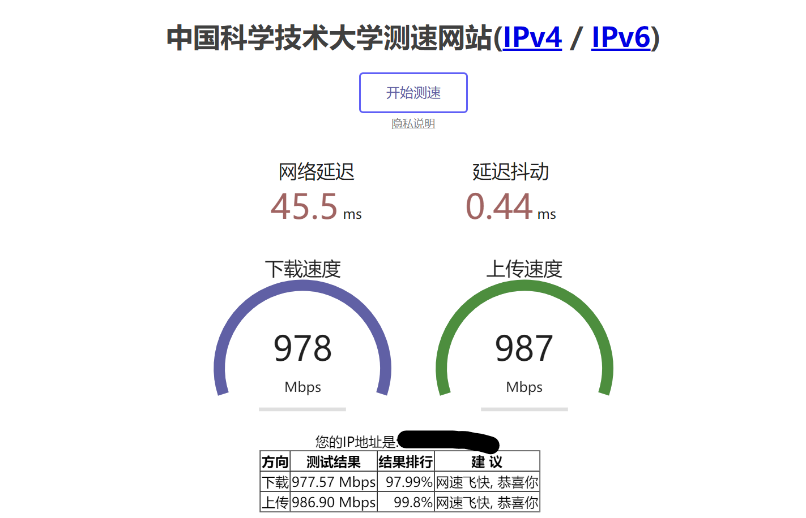

怎样修理我的电脑？魔霸6P疑难杂症记录
我的电脑
我的电脑是一台 ASUS ROG Strix G17 2022(G713RM)，配置如下：
CPU：AMD Ryzen 9 6900HX @3.3GHz
GPU：NVIDIA GeForce RTX 3060 Laptop GPU
RAM：32GB Samsung DDR5 BDie 4800MHz
SSD：1TB Micron 3400 PCIe4.0 NVMe SSD
WiFi：Mediatek RZ616 MT7922 802.11ax WiFi 6E
问题
它最近出现了一些问题，比如：
特定界面、程序卡顿
无法使用快速启动
S0i3 无法正常工作
掉网卡，掉 WLan
etc.
21H2 时期
探索过程
起初我以为是系统的问题，于是我重装了系统，但是问题依旧存在，于是我开始怀疑是硬件的问题，于是我开始了一系列的测试。
首先我测试了内存。我使用了 MemTest86 进行了内存测试，测试了 4 次，没有发现任何问题。随后，因为如今(2023.Q3)的笔记本 DDR5 内存普遍都是低频的，并且 DDR5 时代的 BDie 并没有延续往日辉煌，我尝试将内存频率降低到 4800MHz，但是问题依旧存在。
随后我测试了 CPU。我使用了 Prime95 进行了 CPU 压力测试，测试了 2 次，没有发现任何问题，后来我觉得可能是 CPU 的功耗与性能的问题，于是我尝试将 CPU 的功耗限制调高，将 CPU 的 PBO 调高，但是问题依旧存在。
随后我测试了 SSD。其 S.M.A.R.T. 数据显示一切正常，但是我还是使用了 CrystalDiskMark 进行了 SSD 测试，测试了 2 次，没有发现任何问题。
随后我测试了 WiFi。其掉网卡的问题是偶发的，因为使用了最新的 WiFi 6E 技术，温度过高才导致了掉网卡，一般重启或者重置 UEFI 即可，所以我使用了 iperf3 进行了 WiFi 测试，测试了 2 次，没有发现任何问题。
随后我测试了 GPU。我使用了 FurMark 进行了 GPU 压力测试，测试了 2 次，没有发现任何问题。因为 R9 6900HX 是一颗 8 核 16 线程的 CPU，并且带有 Radeon RX680M 显卡，所以我尝试超频，以及调高功耗限制，增加可调用的 4G 内存作为显存，但是问题依旧存在。
以及其他一些测试，比如：重装系统、重置 UEFI、更新驱动、更新 BIOS、更新 Windows、更新程序…但是问题依旧存在。
之后，我开始怀疑是 Windows 11 的问题，于是我尝试了 Windows 10，但是问题依旧存在。
我将 Micron 3400 更换为了 YMTC ZhiTai PC005 PCIe3.0 NVMe SSD.
安装了 Windows 10 21H2 Enterprise LTSC.
安装了 Windows 11 22H2 Pro.
但是问题依旧存在。遂，我开始怀疑是 UEFI 的问题，于是我尝试了：
禁用 USB4 support，AMD-CBS-CBP，DRAM-Power-Downm，尝试降级 UEFI，尝试升级 UEFI，但是问题依旧存在。
因为旧的 S3 传统待机存在安全隐患，随着 Windows 11 的发布，全新的待机模式 S0i3 也被引入，所以我怀疑是 S0i3 的问题，于是我尝试了：
UEFI 中关闭 S0i3，打开 S3，这样理论上就可以解决问题，但是实际会导致电脑无法正常待机，只能强制关机。
利用 OpenCore 修改引导参数，禁用 S0i3，打开 S3，这样理论上就可以解决问题，确实解决了问题，但是会导致电脑无法正常睡眠，只能休眠，这样会导致电池耗电量过大，而且休眠后无法使用快速启动，只能使用冷启动。只能说这是一个折中的方案。
参考S3-Sleep-on-Rog-X13-G14-15-2021-2022-using-OpenCore
22H2 时期
新发现
在我尝试了上述的所有方法后，我决定使用 Linux 进行测试，于是我尝试了：
Ubuntu 22.04 LTS
Deepin 23 Beta
这两个系统中，所有问题都不存在，这让我感到非常奇怪，于是我开始怀疑是 Windows 的问题
通过对种种迹象的分析，我有了灵感与思路，那就是：Linux 系统使用的 NVidia 驱动与 Windows 系统使用的 NVidia 驱动不同，Linux 系统使用的是开源的 Nouveau 驱动，而 Windows 系统使用的是闭源的 NVidia 驱动。并且，AMD Linux 驱动与 Linux 内核集成，其性能与稳定性都非常好，而 Windows 系统使用的是 AMD 官方的驱动，其稳定性不如 Linux。Nouveau 驱动只能提供基本的显卡功能，而 NVidia 驱动可以提供更多的显卡功能，比如：CUDA、DLSS、RTX、TensorFlow、etc.，所以我怀疑是 Windows 的显卡驱动的问题。
我获取了原厂驱动(2022的最初始版本)，所有问题都解决了。
Driver List:
AMD_Chipset_DriverOnly_ROG_AMD_J_V1.2.0.119Sub1_29512
AMD_Graphic_DriverOnly_ROG_AMD_J_V30.0.14018.19001_28641
ASUSSystemControlInterfacev3_ASUS_Z_V3.1.17.0_15273
Audio_DriverOnly_Dolby_ROG_Realtek_J_V6.0.9427.1_30931
Bluetooth_ROG_MediaTek_J_V1.932.2.294Sub1_33411
DolbyAtmosdriverforROG_V3.30307.371.1_14380_1
Graphic_DCH_ROG_NVIDIA_J_V30.0.15.1278_28613
LAN_ROG_Realtek_J_V1125.008.0515.2022_28702_1
PrecisionTouchPad_ROG_ASUS_J_V16.0.0.13Sub1_28581_1
WirelessLan_ROG_MediaTek_J_V3.03.02.0771Sub1_33414
插曲
我曾经短暂解决了问题，但是又出现了新的问题，我安装使用了 Micron 提供的最新 NVMe 驱动，而不是原厂驱动，这后来也是给我灵感的来源。
我修改了电源计划，因为近几年的华硕笔记本都安装 ARMOURY CRATE 作为电源管理软件，所以我将其卸载，使用 平衡 作为使用的电源计划，关闭硬盘的休眠(因为硬盘休眠也可能因为固件的原因导致无法启动)，利用命令行工具 powercfg 关闭混合休眠…但是问题依旧存在。
后来，我发现了一个非常奇怪的现象，那就是：利用命令行工具 SFC工具 SFC /Scannow 扫描系统，问题就解决了，DISM 命令 DISM /Online /Cleanup-image /Restorehealth 修复系统映像。但是，这个问题只是暂时解决了，因为这个问题会在下一次重启再次出现，或者开启特定的程序后导致系统崩溃。
总结
之所以会出现这些问题，是因为 Windows 11 的显卡驱动的问题，而不是硬件的问题，所以我将这些问题总结为：Windows 11 的显卡驱动的问题。
之所以之前利用 命令 可以短暂解决问题，是因为这些命令会重置 Windows 11 的显卡驱动，或者将显卡驱动的某个组件替换，但是这些命令只是暂时解决了问题，因为 Windows 11 会在下一次重启或者开启特定的程序后再次加载显卡驱动，所以问题又出现了。
所以，确认使用 Windows 11 的用户，应该尽量使用原厂驱动(DCH Driver)，而不是 Windows Update 提供的驱动。
并且，即使是 OEM 提供的最新驱动，也不一定是最好的，所以，如果你的电脑出现了一些奇怪的问题，你可以尝试使用原厂驱动，或者是旧版本的驱动。
至于网卡，我只能说，Laptop Platform MediaTek 之 WiFi6E 还未成熟之前，它的发热量太大，远离它，我已经下单 Intel AX210 802.11ax WiFi 6E。
参考
新式待命與 S3
S3-Sleep-on-Rog-X13-G14-15-2021-2022-using-OpenCore
G-Helper (GHelper)
UniversalAMDFormBrowser
2023.09.10 更新
后续
我已经更换了 Intel AX210 802.11ax WiFi 6E 网卡，之前的问题又复现了，晕。。。所以，我按照之前的流程，一套下来，先用 AMD 提供的显卡驱动卸载工具卸载显卡驱动，DDU 卸载NVidia驱动，然后重装所有原厂驱动，重置 EFI，重做 UEFI 引导，问题解决了。
因为我的路由器是 WiFi5 标准的，所以两张网卡连接 5GHz 信号的速度都是 866 MHz，但是实测 MediaTek 网卡的速度要比 Intel 网卡的速度快(实测 mt7922 能跑 500 Mbps 左右，而 ax210 却只有 300 Mbps)，而且 MediaTek 网卡的信号强度要比 Intel 网卡的信号强度强(mt7922 能稳定 866 Mbps 接收，而 ax210 经常只有 790 Mbps 接收)，但是换都换了，就不想再换了，所以就这样吧。🙄
题外话
话说学校的网也挺快的，上传速度竟然也是 1000 Mbps。😙
(这是用 2.5Gbps 网卡 6 类网线测试的)

补充
有时候系统睡眠异常也可能是系统对设备的电源管理异常，你可以尝试打开设备管理器，找到通用串行总线控制器-USB 根集线器-电源管理，取消勾选允许计算机关闭此设备以节约电源，然后重启电脑。
也可能是系统的引导出错，可以尝试重建引导，或者是重置 UEFI。
即使这些都做过了，电脑仍然是异常的，也可能是因为一些系统策略的错误配置，你可以尝试使用组策略编辑器或者注册表编辑器进行修改。我曾经出现过系统无法关机的情况，即一直在关机界面显示转圈圈
我使用
regedit打开注册表编辑器HKEY_USERS\.DEFAULT\Control Panel\Desktop，按回车键。右键点击
Desktop，点击新建字符串值。将其命名为
AutoEndTasks,并双击打开。数值数据改为
1，点击确定。
网上说的关闭快速启动的方法，我觉得不太靠谱，因为我关闭了快速启动，但是问题依旧存在。这样做其实是在解决问题的后果，而不是解决问题的原因。是治标不治本，是饮鸩止渴的做法。
参考：[求助] 选择关机后，win11卡住，一直“正在关机”转圈圈
23H2 时期
2024.01.28 更新
一切看起来都很正常，但是我发现了一个问题，那就是：当我的电脑睡眠一段时间后，会无缘无故被唤醒
我打开日志查看器，发现了一些有趣的东西：
那就是电脑报告了一个驱动程序的损坏，而这个驱动是 AX210 的驱动，我尝试了重装驱动，结果变得更坏
电脑无法正常睡眠，只能休眠，而且休眠后无法使用快速启动，只能使用冷启动。也就是说，我又回到了之前的状态。
我尝试使用命令
1 | SFC /Scannow |
然而，这个命令并没有解决问题
于是我去查找资料，相关信息报告无法在睡眠与快速启动可能是由于 EFI 引导的问题，而且与 MSR 分区有关
于是我尝试了重建引导
华硕默认给出的 ESP 名为 SYSTEM，而且分区大小为 270 MB，于是我将原先的 ESP 分区删除，新建一个 300 MB 的 ESP 分区
并且，我将 MSR 分区的大小默认是 16 MB，于是我将 MSR 分区的大小调整为 256 MB
1 | # 删除原先的 MSR 分区 |
注意：电脑是 GPT 分区表，删除操作可以在 DiskGenius 中进行，新建操作可以在 DiskGenius 中进行，但是新建 MSR 分区的大小只能在命令行中进行，因为 DiskGenius 中无法设置 MSR 分区的大小。
然后，我重建了引导，但是问题依旧存在
之后，我想到很可能与驱动程序相关
于是我尝试了重装驱动，但是问题依旧存在。
然后，在使用 DDU 卸载驱动程序后，我发现了一个有趣的现象，那就是：使用DDU卸载驱动的设备，系统不会对其进行自动安装驱动
于是我想到，Windows 系统很可能保存了驱动程序的备份，并且在设备出现问题时，即使手动管理驱动，系统仍然受到了错误的驱动程序的影响
于是，我改变思路，重启到了 PE 系统，使用 DISM++ 工具
打开系统映像，找到驱动程序，删除了所有有关的驱动程序(比如：Intel、NVIDIA、Realtek、MediaTek、AMD、ASUS、etc.)
然后，我重启到了 Windows 系统，发现问题解决了，系统可以正常睡眠，而且可以使用快速启动。
于是，我开始重装驱动程序。都是使用原厂驱动，而不是 Windows Update 提供的驱动。
没有出现问题，一切正常。
唯一出现的问题就是：**出现了一个其他设备，硬件 ID 为 ACPI\VEN_ASUS&DEV_9001
这是一个 ACPI 设备，华硕提供的驱动程序是 ASUS System Control Interface v3，但是这个驱动程序并不包含这个设备的驱动程序
于是，我比对华硕在硬盘中恢复分区内保留的镜像文件，发现了这个设备的驱动程序，其实就是 Armoury Crate Control Interface
因为我使用开源工具 GHelper 对设备进行管理，并没有安装 Armoury Crate，所以没有安装这个驱动程序也就不奇怪了，于是我提取镜像中的这个驱动程序，安装了这个驱动程序，问题解决了。
新的结论
导致电脑无法正常睡眠以及快速启动失效的原因有着多种因素
EFI 引导的问题
MSR 分区的问题
驱动程序的问题
其他未知的问题
新的建议
优先尝试使用命令行工具
SFC与DISM修复系统使用微软官方的 Windows 11 镜像，而不是 OEM 提供的 Windows 11 镜像
删除 OEM 内建的 EFI 引导以及 MSR 分区，重新建立 EFI 引导以及分区，不小于 300 MB
在 PE 系统中，使用 DISM++ 工具，删除所有可能导致问题驱动程序
重装驱动程序，优先使用原厂驱动，而不是 Windows Update 提供的驱动
如果你使用了 GHelper，但是没有安装 Armoury Crate，那么你需要手动安装 Armoury Crate Control Interface 驱动程序
新的发现
我发现了一个有趣的现象，对于本机，那就是：系统可能存在问题时，开机动画的旋转圆圈是一体的连续的，而系统不存在问题时，开机动画的旋转圆圈是由多个小圆圈组成的
当然，如果系统不存在问题，那么开机动画的旋转圆圈也可能是一体的连续的，但是，如果系统存在问题，那么开机动画的旋转圆圈一定是一体的连续的。
我推测这与系统的引导有关，以及 AMD 核芯显卡与 NVdia 独立显卡的 MUX 技术兼容性有关，但是我并没有找到相关的资料。
24年2月11日更新
我发现这个问题只存在于 Win11 23H2 之前的系统
2024.05.8 更新
到目前，使用最新版本的 Windows 11 23H2(OS内部版本22631.3147)，一切正常，基本没有出现任何问题。
可以放心的使用了。
但是需要注意显卡驱动的问题，华硕提供的AMD显卡驱动并不是最新的(华硕在今年的3月25日发布的，但这个其实是AMD在23年11月30日发布的)，但是也提供了一个相对稳定的版本，所以，如果你的电脑出现了一些奇怪的问题，你可以尝试使用华硕提供的驱动程序（我个人是不推荐使用AMD官网上下的，因为我每次使用，总是会出问题）。
nVdia 的显卡驱动可以使用英伟达提供的，但是英伟达在近期的驱动总是会出现一些问题，所以，如果你的电脑出现了一些奇怪的问题，你可以尝试使用旧版本的驱动程序。
24H2 时期
2024.10.17 更新
每当重新启动过后，想要打开 Win11 的控制中心，然而每次都会卡一下，非常难受，于是，我发现这个故障是由 ai noise cancelling asus utility 这个玩意儿导致的，打开设备管理器，卸载时同样卸载驱动后，问题解决了。
这个东西是华硕的 AI 噪音消除工具，但是我并没有使用（因为使用Ghelper作为管理工具，无法调用），所以卸载了也不会有什么影响。
2024.11.11 更新
经过约半年的使用，一切正常，没有出现任何问题，可以放心的使用了。
基本可以确定这是一个 Windows 11 与驱动程序共同导致的问题，而不是硬件的问题。
至此，我可以下一个结论，建议使用 MSDN 提供的 Windows 11 镜像，而不是 OEM 提供的 Windows 11 镜像，使用最新的驱动程序，Windows Update 提供的驱动程序也是一样可以使用的，但是注意版本问题（Window Update 可以识别你的机型，然后自动安装厂家提供的驱动，但不一定是最新的）
有网友发现，该机型似乎存在一个通病，需要换CPU解决，即开机到LOGO界面就无法启动了，但如果能够进入系统又可以正常使用
疑似 CPU 虚焊/体质下降导致的问题
根据 AMD 机器以往的案例，据我推测，大概是电压的原因，因为这个型号的ROG没有打黑胶，并且散热做得很好，基本排除虚焊的可能
以前小米的 4800H 机器也是过保一段时间可能出现这种情况（也是个别案例），是AMD给的电压太低了，当时新机可能可以正常使用，但是用久了体质下降，电压不够了，就会出现这种问题
解决方法就是利用 ru 工具修改 BIOS 电压(技术上实现可能有难度)，或者干 CPU 换新的
你也可以向厂商反馈，期待厂商发布测试 BIOS 修复这个问题，但对于过保机器且不是大规模爆发的问题，几乎可不能期待
2025.01.01 更新
经过一年的使用，一切正常，大部分问题得到解决，可以放心的使用了。
保持驱动程序最新，和前文一样，不再赘述。
之前的问题，大部分是 Windows 11 本身的问题，而不是硬件的问题，所以，如果你的电脑出现了一些奇怪的问题，你可以尝试使用 MSDN 提供的 Windows 11 镜像，而不是 OEM 提供的 Windows 11 镜像，并且，该机型在 23H2 之前的系统会出现一些问题，所以，建议使用最新的 Windows 11 23H2 系统。（24H2 暂时没有使用，故不讨论）
有关显卡驱动也可以使用 Microsoft®Update Catalog 进行搜索，这是微软官方提供的驱动程序下载站，可以搜索到最新的驱动程序，但是需要注意，这里的驱动程序是 Vendor 提供的 DCH 驱动，不是 OEM 提供的驱动程序，但是显卡驱动可以使用，因为 OEM 提供的驱动版本已经过时，对部分游戏不友好。
前文提到的控制中心仪表盘卡顿问题（只有每次开机后第一次使用时卡顿），一部分原因是由于华硕的 AI 噪音消除工具导致的，还有一部分是 AMD 的显卡驱动导致的（单独只用 AMD 核显或者单独只用 NVDIA 独显都不会导致卡顿，测试环境是新装系统不联网只安装其中一种驱动，但是一旦两种驱动都安装，就能出发该卡顿问题），但是华硕迟迟没有发布新的驱动程序（截至当前，最新的版本仍然是24年3月发布的），而 AMD 提供的驱动程序对本机兼容性不友好，暂时没有解决方案，只能等待厂商发布新的驱动程序。
2025.02.23 更新
更新了24H2系统，结果出现了新的问题
资源管理器侧边栏快速访问的 Linux 分区无法正常显示，但是可以正常访问解决方法是开关虚拟机相关功能，然后运行 WSL Setting
启动 UAC 时，反应迟钝，但是可以正常使用起初我以为是 Windows Update 后，系统存在损坏，但运行了 SFC 以及 DISM 命令后仍然如此。然后我觉得可能是 Windows Defender 的问题，所以关闭了 Windows Defender，安装了卡巴斯基杀毒软件，问题依旧存在。也可能是驱动程序的问题，因为我注意到只使用核显的时候并没有该现象，独显直连的时候也不会产生，只有核显与独显共存时存在该问题；于是我进入安全模式，使用 DDU 清理英伟达驱动，AMD官方的 AMDCLEAN 驱动清理工具清理 AMD 驱动，然后重装了最新的驱动程序（Windows Update 提供的），问题依旧存在，于是我重复之前清理的步骤，安装了 OEM 提供的驱动程序，并手动更新了英伟达的最新 Studio 驱动，问题解决。
关于 UAC POPUP 慢的问题，我注意到一个现象，当 AMD GPU 是 GPU 0 的时候，就可以复现这个问题（当 igpu + gpu 时，only igpu/direct gpu除外），当 NVDIA GPU 是 GPU 0 时，就不存在该问题，这个问题可能是由于 Windows 调度失误导致的。
2月24日
破案了，是英伟达驱动的问题，老驱动并没有这个问题，新的驱动才有，在英伟达控制面板里3D设置->首选图形处理器->自动选择改成高性能 NV 处理器
2月25日
旧病复发也，突然惊觉，一直是英伟达驱动更新的勤快，但是有没有可能，AMD 的也有问题，一看，AMD 的驱动上次更新还是23年末，好家伙，这24H2系统是24年末的，可能 AMD 的驱动不兼容了也是可能的，于是我更新了 AMD 的驱动，问题解决。
| Vender | Version | File | Date |
|---|---|---|---|
| AMD | 30.0.12033.1030 | whql-amd-software-adrenalin-edition-24.12.1-win10-win11-dec-rdna.exe | 2024/11/27 |
| NVIDIA | 30.0.15.6636 | 566.36-notebook-win10-win11-64bit-international-nsd-dch-whql.exe | 2024/12/3 |
注：皆是安装了 OEM 提供的驱动后升级安装
华硕的笔记本驱动更新的很不勤快，而且兼容性很差，当时买了的时候，原装的OEM系统存在恶性BUG（无法正常睡眠，经常性黑屏死机），只能重装MSDN原版系统才能解决直到从21H2到23H2大概1年多时间，多次UEFI更新，驱动更新，才算稳定正常使用了而且，很多驱动在官网上无法下载到，而Microsoft Update Catalog上推送的驱动又可以查询到是ASUS推送的，但官网却没有下载。以及一些系统设备的驱动，华硕完全没有提供，必须下载奥创，然而奥创的灾难表现以及Bug，常常安装不上这些驱动，在设备管理器中显示未知的设备，让人不得不选择放弃，转而去从oem系统镜像中提取驱动。难以想象这是ASUS的ROG系列产品，测试完全交给消费者，软件非常不稳定，驱动更新不及时，维护不及时，售后服务也不及时，这是一个非常不负责任的行为。
3月21日更新
windows update 给我更新了 24h2 03 积累更新，结果旧病复发。
这次使用了 DDU 卸载了英伟达驱动，AMD clean 实用程序卸载了 AMD 驱动。
使用SFC /Scannow扫描系统，DISM /Online /Cleanup-image /Restorehealth修复系统映像。
然后重装了 OEM 提供的驱动，更新了AMD的驱动（官网提供的25.3.1）版本，同时更新了芯片组驱动（OEM 提供的仍然是22年的，该芯片组驱动已经是24年的了），英伟达的驱动更新到565.90，问题解决。
奇怪的是此时 amd igpu 是 gpu 0，nvdia dgpu 是 gpu 1。
3月22日
这个芯片组驱动（7.02.13.148）存在问题，将导致S0睡眠相关问题，长时间睡眠后，有概率导致唤醒黑屏（无显示，有背光），但此时计算机并没有死机，对用户操作是可处理的，重复睡眠唤醒多次可以解决，但这并不是我想要的，故退回 OEM Chipset 驱动。
以及唤醒后锁屏页面色彩显示错误，发白等问题。
5月9日
这个有时候屏幕发白的问题，应该是屏幕校色的问题，重新进行校色或者相关文件的导入就可以解决。
我更新了24H2 04 更新，更新了最新瑞昱网卡驱动，最新AMD 4月芯片组驱动以及显卡驱动，目前使用一切正常
但又发现了新的问题，即我想使用 WOL，再打开 BIOS 的 PME以及网络启动后，但是在Windows 11 中无法使用将网卡的电源管理中网络唤醒打开，选项框是灰色的，无法选择。目前的原因不明（即使更改注册表加入PnP的选项，仍然无法使用），安装了瑞昱的最新驱动后，仍然是如此。有时间我使用原厂系统去测试一下，看看是系统原因还是该机型的问题。